Orbit.
Chaque campagne, en temps réel. Pour toute l'agence.
Un rapport,
c'est une soirée
de recopie.
WhatsApp, photos, Excel, notes. Et des chiffres qui changent après envoi.
10 h, une vente au kiosque.
10 h 01, toute l'agence la voit.
Saisie sur le téléphone. Plus rien à recompiler le soir.
Le terrain saisit.
Orbit fait le reste.
Calculs, classements, commentaires, rapports. Rien à ressaisir.
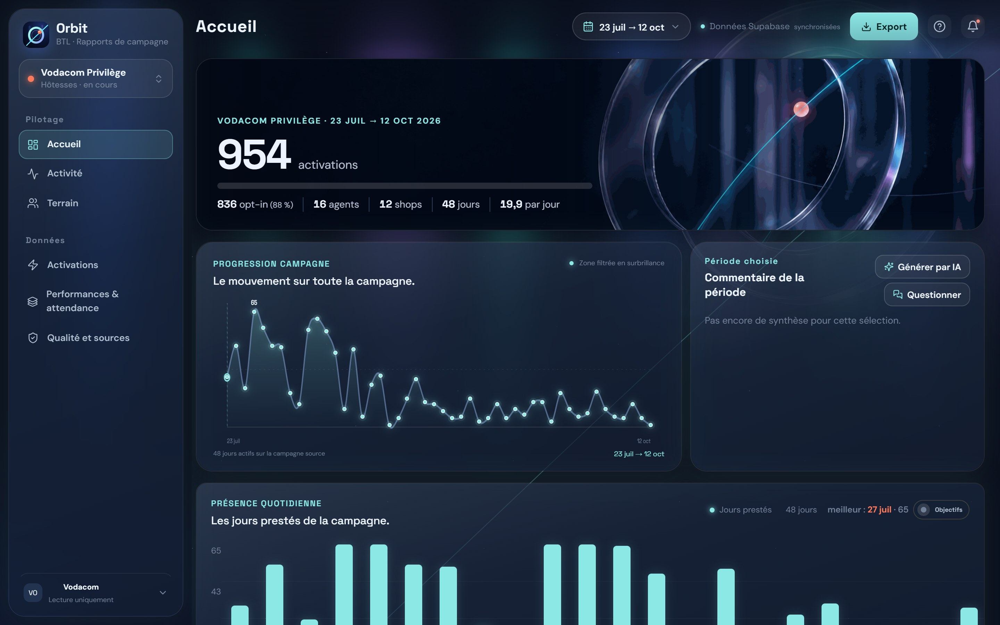
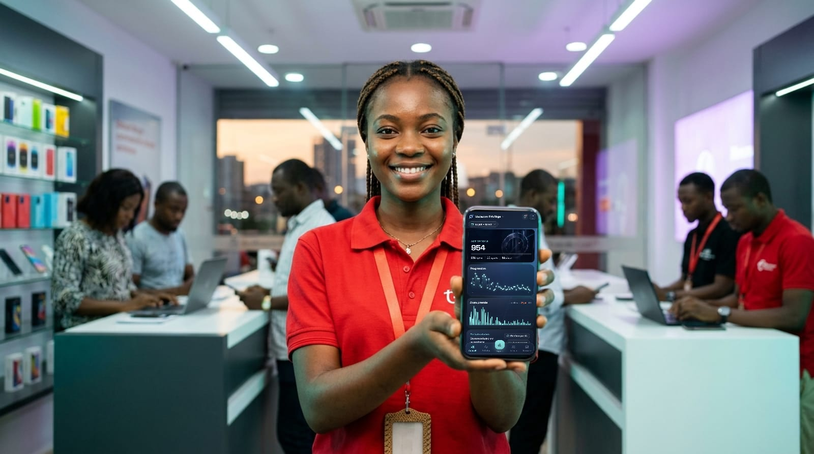
Un lien.
Partout.
Téléphone, ordinateur, écran de salle. Rien à installer, s'installe en un geste.
Chaque campagne a
son Orbit.
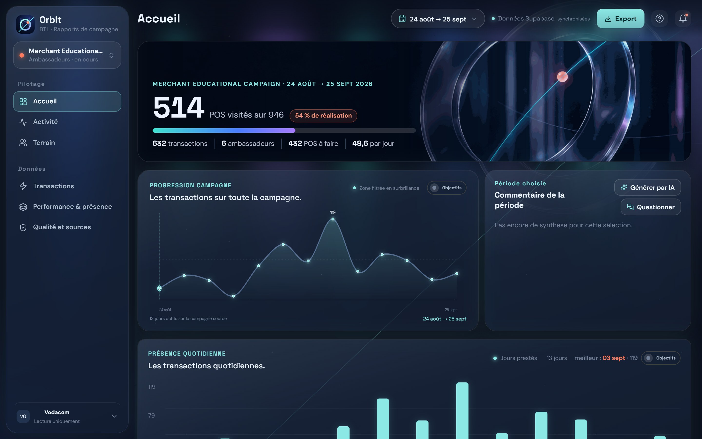
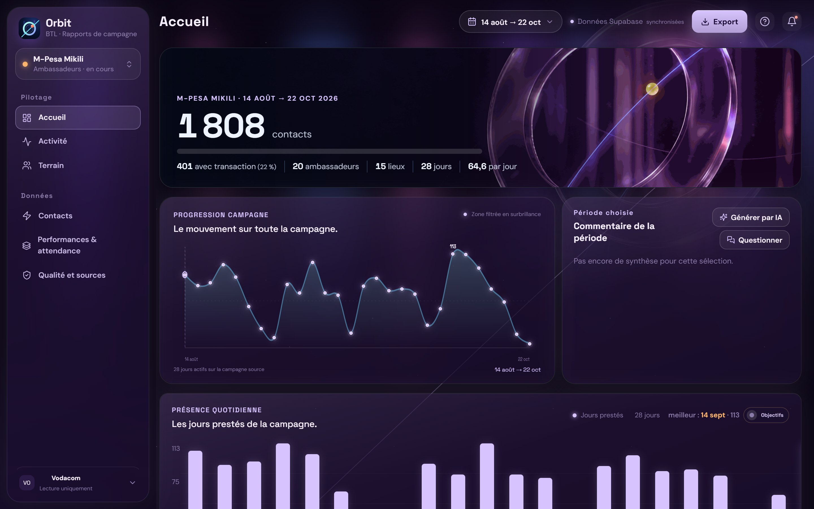
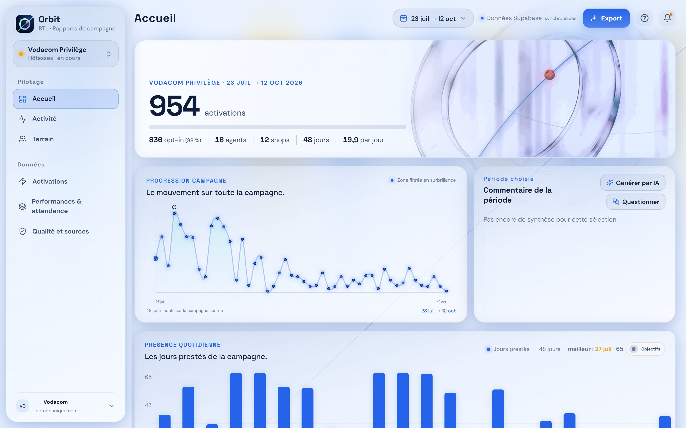
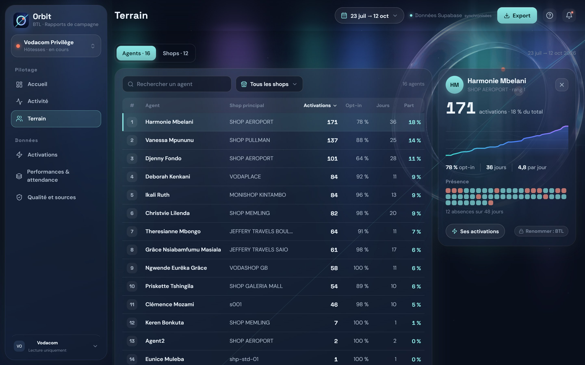
Une source.
Zéro version.
Une base unique et sécurisée. Chaque correction est tracée.
Le chiffre se calcule.
Il ne se recopie plus.
Avant
- Recopies WhatsApp → Excel
- Doublons, oublis, formules cassées
- Corrections après envoi
Avec Orbit
- Saisie unique, sur le moment
- Totaux et objectifs automatiques
- Anomalies signalées avant envoi
Le rapport client
en 30 secondes.
PDF prêt à envoyer. Excel avec formules et données brutes, vérifiable.
On pose la question.
Orbit répond, chiffres à l'appui.
• Becky O. : 211 transactions en 10 jours
• Patience T. : 141 en 12 jours
• Jesly B. : 113 en 12 jours
Les notes de terrain signalent des lenteurs de connexion et des fonds livrés en retard.
Suggestion : approvisionner les fonds dès le matin.
Jeudi, un shop décroche.
Vendredi, c'est corrigé.
On déplace les équipes avant la fin de la semaine, pas après.
Les résultats
se montrent en direct.
Le client voit
ce que nous décidons.
Par campagne : l'accès, les objectifs, les questions à l'IA.
Prise en main.
Tout est déjà disponible.
Se connecter
- Vodacom : lecture seule, un clic.
- BTL : choisir son profil, saisir son mot de passe.
- Le tracker ouvre Orbit déjà connecté.
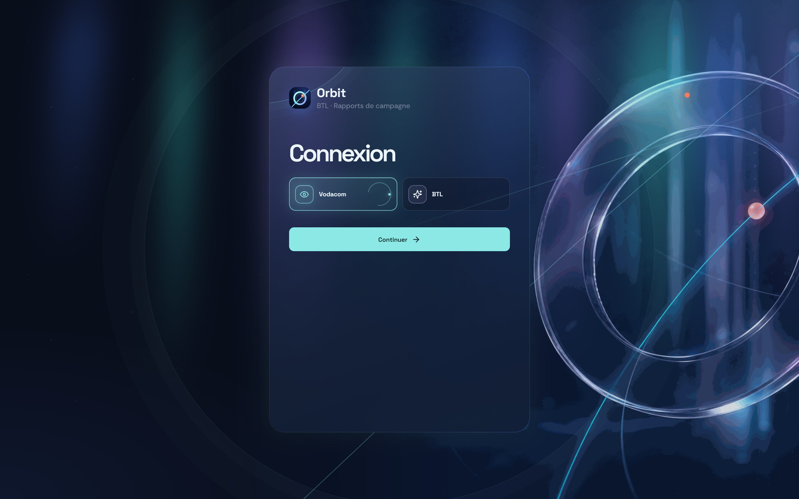
Choisir la campagne
- Touche C, ou le bouton en haut à gauche.
- Taper quelques lettres pour filtrer.
- Entrée pour ouvrir.
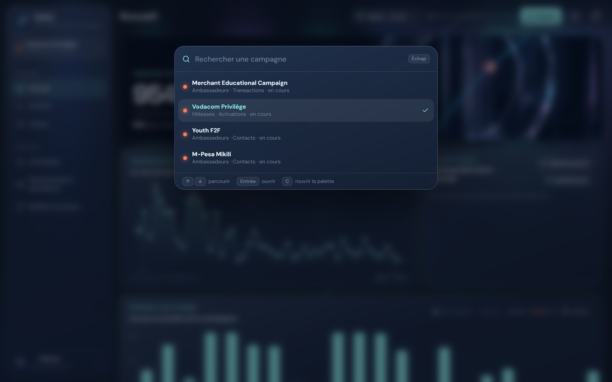
L'accueil
- La campagne
- La période, un clic
- Le chiffre clé et l'objectif
- La progression jour par jour
- Le commentaire de la période
- L'export
Activité
Le rythme de la campagne, jour par jour, agent par agent.
Pourquoi : repérer un jour faible ou un agent absent en un coup d'œil.
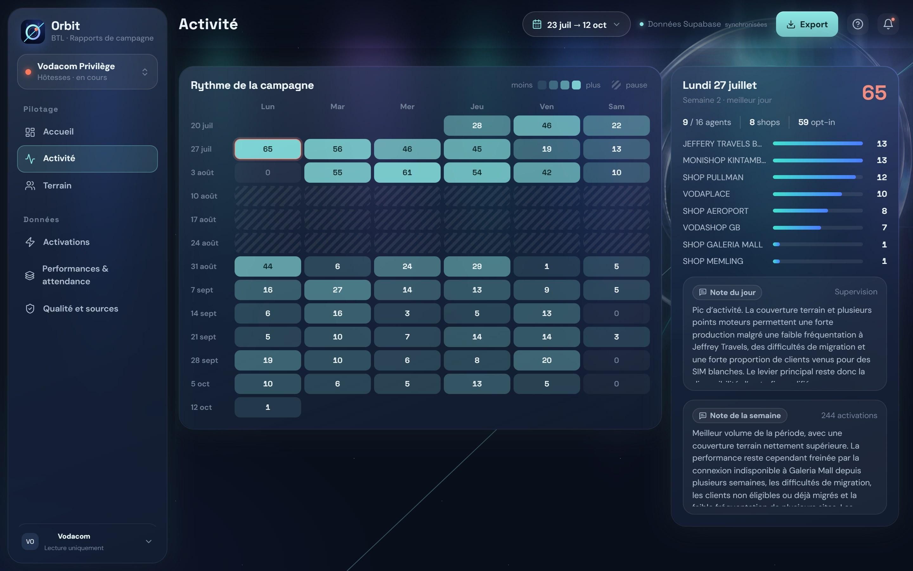
Terrain
Agents et shops classés. Une fiche par personne.
Pourquoi : savoir qui performe et où renforcer.
Données
- Journal : chaque ligne, filtrable.
- Performances : présence et volumes par jour.
- Qualité : anomalies à corriger.
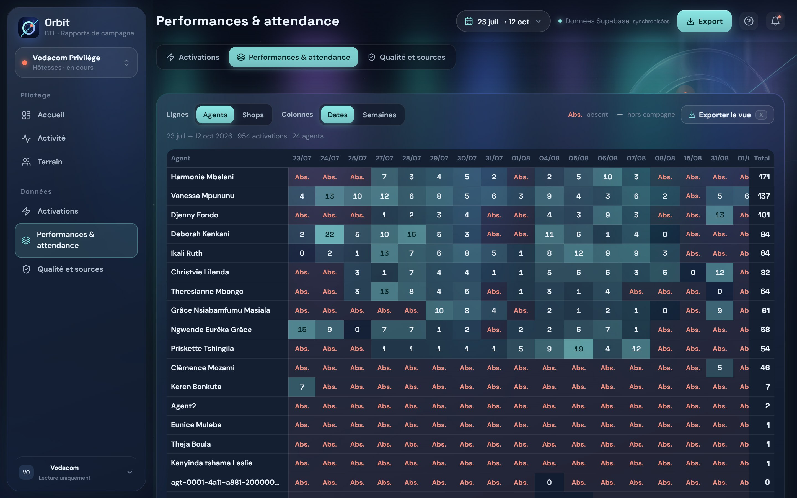
Exporter
- Bouton Export, en haut à droite.
- Choisir PDF ou Excel, cocher les sections.
- Télécharger. C'est prêt.
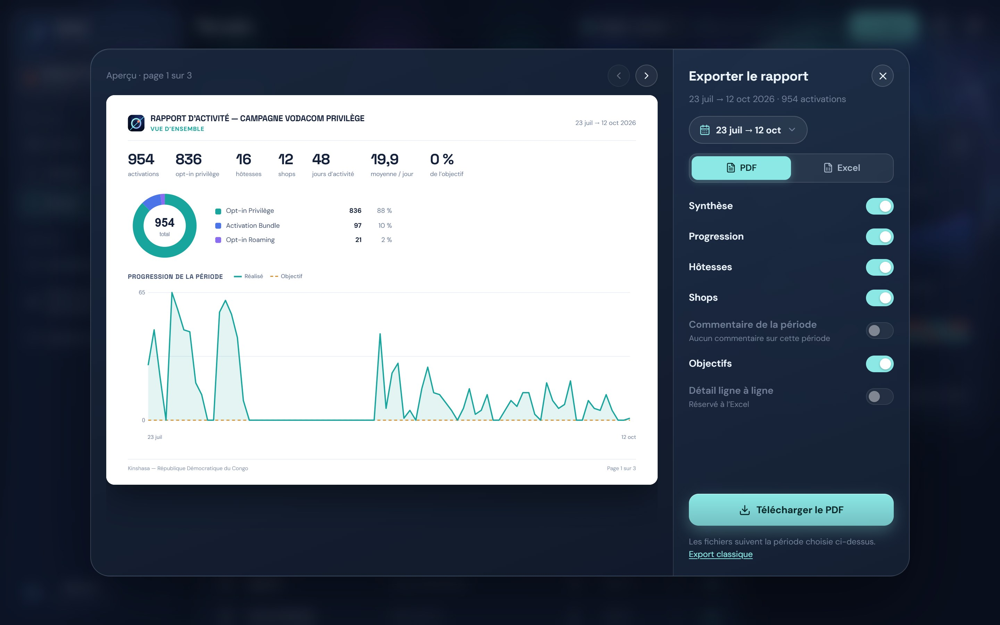
Questionner
- Bouton Questionner, sur le commentaire de la période.
- Une suggestion, ou sa propre question.
- Le compteur affiche les questions restantes.
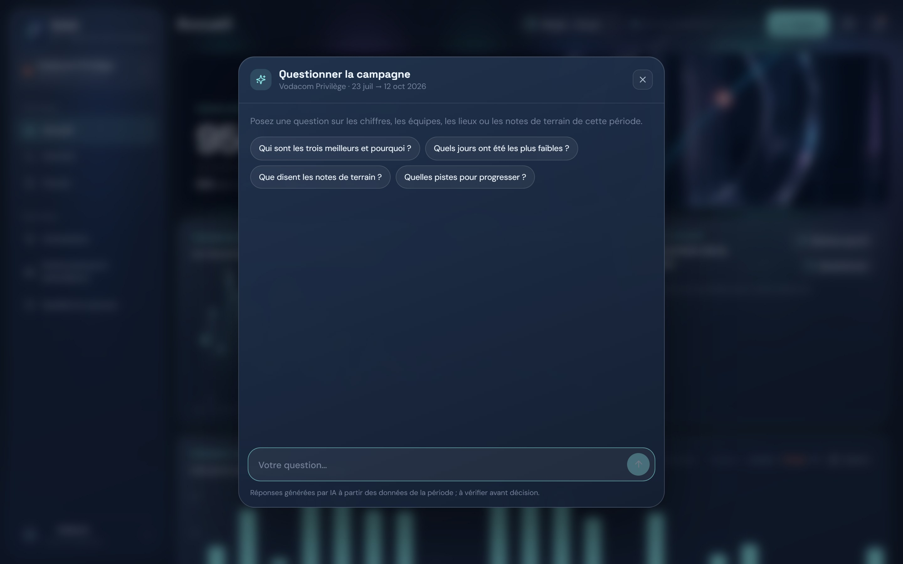
À son goût,
dans la poche.
- Apparence : six ambiances, opacité, flou.
- Installer : ajouter à l'écran d'accueil.
- Sur téléphone, tout passe par le dock du bas.
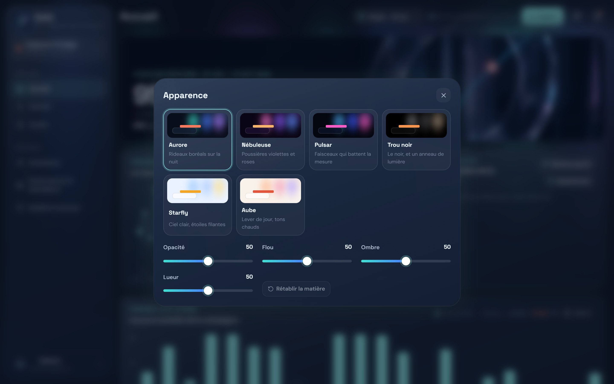
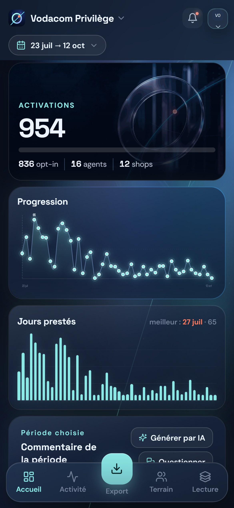
Accès client
et paramètres
- Accès client : trois interrupteurs par campagne.
- Paramètres : objectifs, profil, quota de questions.
- Journal : toutes les modifications, datées.
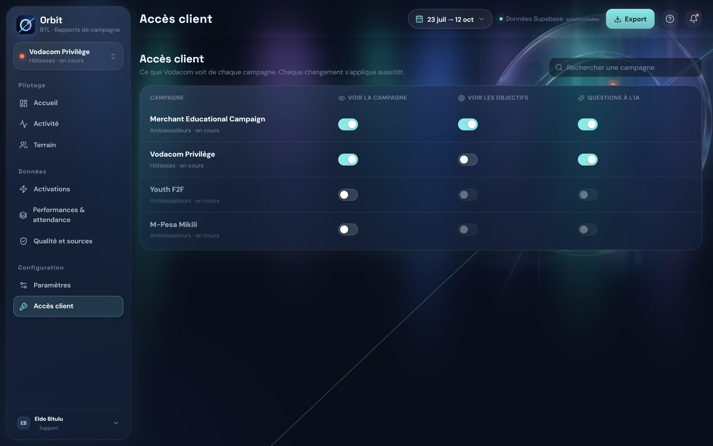
Orbit ne vaut que si
tout le monde l'utilise.
Un agent qui ne saisit pas, c'est un chiffre faux pour toute la campagne.
Investi une fois.
Presque rien ensuite.
Une fois. Déjà en cours de réalisation.
Pour brancher un nouveau type.
Base, site et IA compris.
Orbit devient
une ligne de facture.
Accès client, tableaux, rapports.
Commentaires et questions.
Questions par jour selon le contrat.
Lent au départ.
Net ensuite.
Hypothèses : 2 mois de rodage non facturés, puis 2 campagnes par mois, une sur deux avec l'IA. Prix : 400 $ par campagne, +100 $ pour l'IA. Coûts : 500 $ au départ, 50 $ par nouvelle campagne, 50 $ par mois.
Testons vos hypothèses.
Le client voit sa campagne.
Il nous choisit.
Transparence, réactivité, chiffres vérifiables : ce que nos concurrents ne montrent pas.
90 jours pour en faire
un réflexe.
Adopter
- Prise en main par équipe
- Toutes les campagnes sur Orbit
- Fin des rapports Excel internes
Montrer
- Accès client sur une campagne
- Réunions sur écran
- Ajustements
Facturer
- Orbit dans les devis
- Option IA proposée
- Bilan chiffré
Les questions qu'on va nous poser.
Une décision :
Orbit, pour toute l'agence.
Adhésion de toutes les équipes. Un référent par équipe. Orbit dans les devis.
Merci.
Orbit · Développé par Eldo